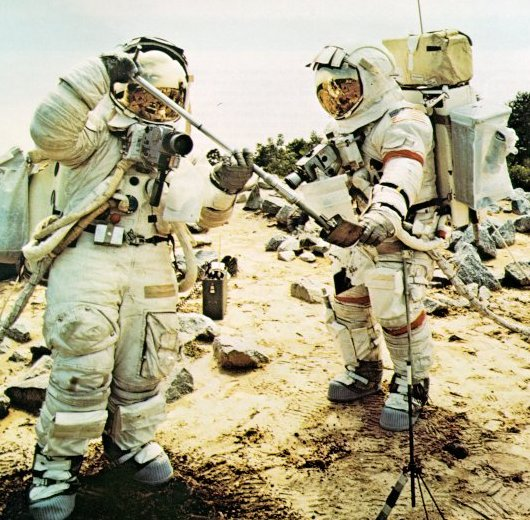
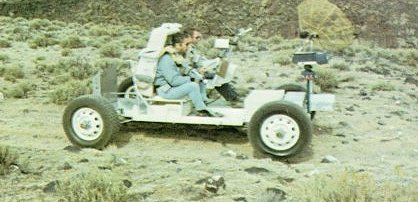
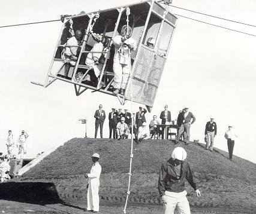
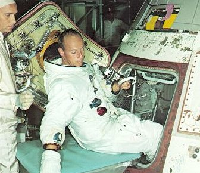

|  |
| On mock lunar terrain, wearing restrictive pressure suits, Schmitt and Cernan practiced collecting geological samples. They were drilled in formal sampling procedure: locate, radio description of size and color, photograph in place by the gnomon, and then collect in numbered plastic bags. |
|  |
| Fitted with Earth wheels and performance characteristics to match those expected on the Moon, a version of the Moon buggy was driven on rough terrain until its handling traits were second nature to the astronauts. They learned its steering feel, braking ability, and grew familiar with its guidance and navigation calculator. Here Astronauts Scott and Irwin practice for Apollo 15. |
|  |
| It's a long way down. The astronauts had to train for the possibility that during countdown their launch vehicle could turn into a bomb. The rig shown here was practice for a ride for life from the 320 ft level of the Mobile Launcher. The astronauts would, if necessary, enter the cab and zoom down the guide wire into an underground, padded and insulated room, safe from explosion. Astronaut Roosa prepares to climb down. |
|  | Getting in and out of the hatch: a necessary element in training. Before launch, an astronaut had to fit into a very cramped space without rearranging preset console switches. During return from the Moon, it was also necessary for one man to get out and return through the CM hatch to retrieve the film and data cassettes from the service module. |